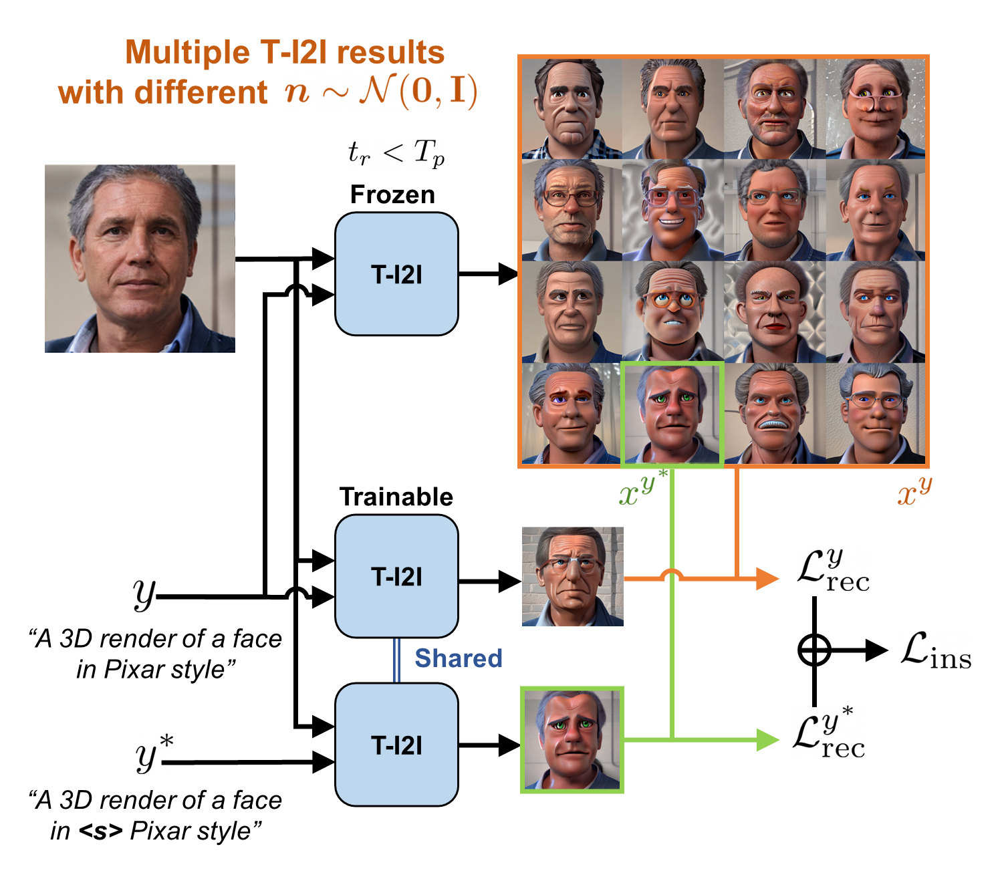

Overview

Overview of DATID-3D, our novel pipeline for text-guided domain adaptation of 3D generative models. We construct target dataset using the pre-trained text-to-image diffusion models, followed by refining the dataset through filtering process. Finally, we fine-tune our models using adversarial loss and density regularization.
Interactive demo

We provide a interactive Gradio app as well as Colab demo to enjoy the results of DATID-3D.
Pose-controlled images and 3D shapes

Instance-selected domain adaptation

One-shot fine-tuning of text-to-image diffusion models for instance-selected domain adaptation. Resulting text-to-image diffusion models are applied to the Stage 1.

Results of instance-selected domain adaptation, selecting one Pixar sample to generate more diverse samples for it.
Single-view 3D manipulated reconstruction

As advancements of prior 2D text-guided image manipulation, our method enables (1) lifting the text-guided manipulated images to 3D and (2) choosing one among diverse results from one text prompt.
Wide range of text-guided adaption results